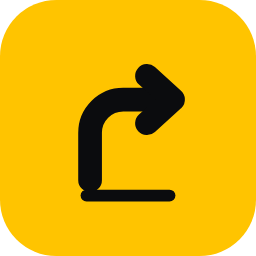
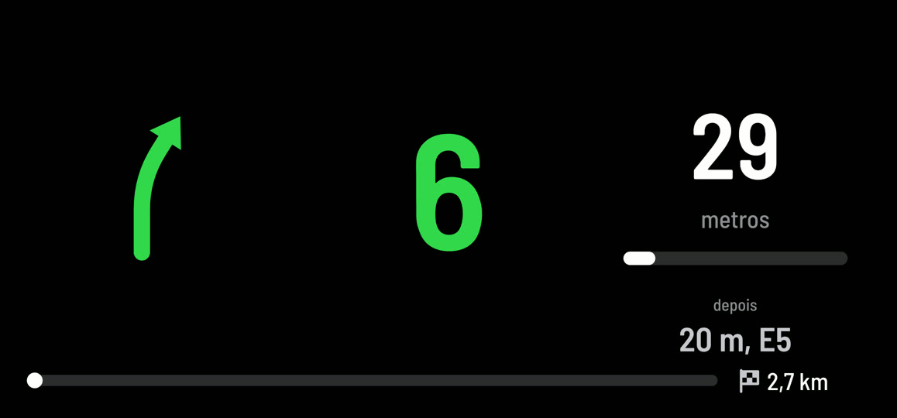
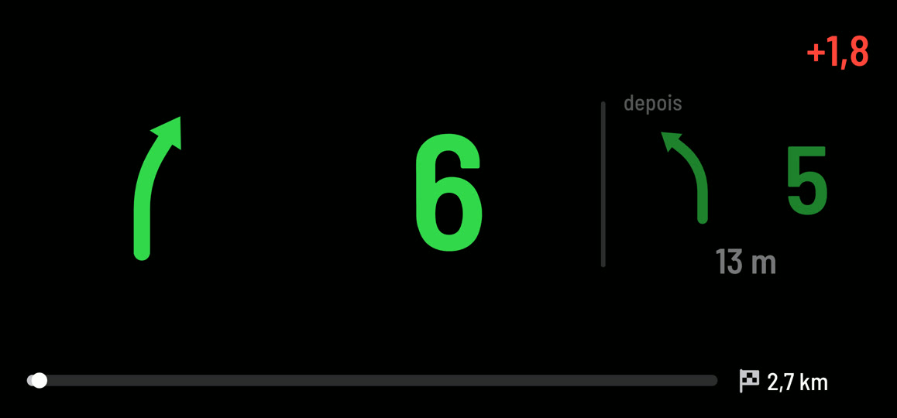
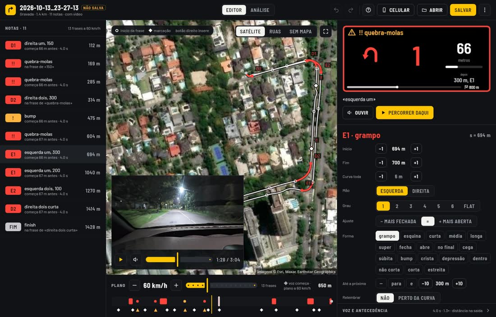
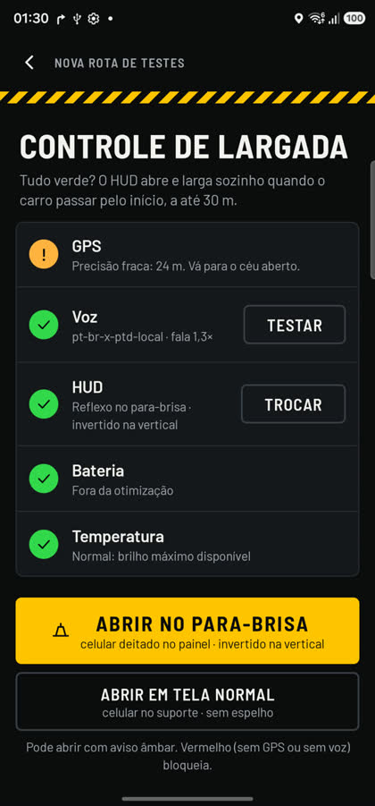

PACEHUD
A rally co-driver in a phone. It calls the pacenotes out loud at the right moment and shows the next note on a head-up display reflected in the windscreen.
The next corner, where the driver is already looking
The phone lies flat on the dashboard and the glass reflects the screen. Arrow and number use the pacenote grade scale (1 = slowest, 6 = nearly straight, flat), coloured by grade.


From a recce drive to a timed run
Record the recce
Drive the road once at an easy pace. The phone logs GNSS, video with sound, and markers for hazards (speed bumps, potholes, crests).
Generate the notes
On the phone, without internet: corners are detected from the track, graded by radius, linked with "into", "and" or a distance, and suspicious ones are flagged.
Edit
On the phone or in the desktop editor with satellite map and the recce video in sync: start and end of each corner, grade, modifiers, lead time per corner.
Train
A virtual car drives the stage at a fixed speed or at the real speed of a previous run, with voice and HUD, while parked.
Run
The launch control checks GNSS, voice, battery and temperature. The HUD opens on the windscreen or in a phone holder, and starts by itself at the start line.
Analyse
Each run keeps its time, speed along the stage and every call. Compare runs, see the live delta on the HUD, and tune lead times where a call came early or late.
Everything is positioned by distance along the stage
The stage is a polyline in a local metric plane. Each GNSS fix is matched to it, and every note, call and HUD frame is placed by s, the metres from the start.
Tracker
Matches each fix to the route inside a moving window, rejects off-route readings with hysteresis, and estimates position between fixes from Doppler speed.
- Output
- ŝ and v at 20 Hz
- Off route
- > 40 m, 3 fixes
Call scheduler
Starts each phrase a set time before the corner, predicting arrival from the speed profile of a previous run of the same stage, scaled to the current speed.
- Lead time
- 4.0 s (per corner)
- Chain horizon
- 3 s
- Voice latency
- 0.07–0.26 s
HUD
Fixed zones on an 800 × 360 canvas, nothing overlaps; mirrored for the reflection; night brightness from the sun's elevation at the stage.
- Refresh
- 20 Hz
- Orientation
- fixed landscape
Integrating dragy as an optional position source
The phone's own GNSS is the limit today. Road tests on 13 and 15 October 2026 (Galaxy S23 Ultra) show where it falls short.
Measured with the phone
| What | Phone GNSS |
|---|---|
| Fix rate | 1 Hz |
| Accuracy, cruising | 3.8–4 m |
| Accuracy at a speed bump (4–14 km/h) | 11 m, position jumps back |
| Fake corner at a speed bump | 31° by position, 9° by Doppler heading |
| Call timing error, mean | 1.3 s (up to 4.6 s) |
At 60 km/h one fix is 17 m of road. Corners are detected and the HUD is timed from those sparse, noisy points.
What dragy would give
- 10–25 fixes per second instead of 1: corner shape from the real path, not from an interpolated one.
- Doppler speed and heading with their accuracy: braking and speed bumps no longer read as corners.
- Fix quality (satellites, accuracy) shown on the launch control before the start.
How the integration would work
- A source choice on the recce and launch screens: phone GNSS or dragy. The phone stays as fallback if the link drops.
- Only position, speed, heading, accuracy and time are read. Everything stays on the phone; no account, no upload.
- Works offline during the stage, like the rest of the app.
Fine-tuning with map and video


Personal project, in active road testing
PaceHUD is built and tested by one driver for personal use, on closed roads and on public roads at legal speeds. The app is Kotlin with Jetpack Compose; the desktop editor is Compose Multiplatform. Source is in a private GitHub repository; releases ship as an Android APK and desktop installers.
PACEHUD
Um navegador de rali no celular. Fala as notas do pacenote em voz na hora certa e mostra a próxima nota num HUD refletido no para-brisa.
A próxima curva onde o piloto já está olhando
O celular fica deitado no painel e o vidro reflete a tela. A seta e o número seguem a escala de graus do pacenote (1 = a mais lenta, 6 = quase reta, flat), com a cor do grau.
Do reconhecimento à passada cronometrada
Gravar o reconhecimento
Percorra a estrada uma vez com calma. O celular grava o GNSS, vídeo com som e marcações de perigos (quebra-molas, buraco, crista).
Gerar as notas
No próprio celular, sem internet: acha as curvas no trajeto, dá o grau pelo raio, liga com "para", "e" ou a distância e marca as suspeitas para conferir.
Editar
No celular ou no editor do computador, com mapa de satélite e o vídeo do reconhecimento juntos: início e fim de cada curva, grau, modificadores, antecedência por curva.
Treinar
Um carro virtual percorre a especial numa velocidade fixa ou na velocidade real de uma passada anterior, com voz e HUD, com o carro parado.
Correr
O controle de largada confere GNSS, voz, bateria e temperatura. O HUD abre no para-brisa ou num suporte e larga sozinho na linha de largada.
Analisar
Cada passada guarda o tempo, a velocidade ao longo da especial e cada chamada. Compare passadas, veja o delta ao vivo no HUD e ajuste a antecedência onde a chamada veio cedo ou tarde.
Tudo é posicionado pela distância ao longo da especial
A especial é uma polilinha num plano métrico local. Cada fix do GNSS é encaixado nela, e cada nota, chamada e quadro do HUD fica numa posição s, os metros desde a largada.
Rastreador
Encaixa cada fix na rota dentro de uma janela móvel, descarta leituras fora da rota com histerese e estima a posição entre os fixes pela velocidade Doppler.
- Saída
- ŝ e v a 20 Hz
- Fora da rota
- > 40 m, 3 fixes
Agendador das chamadas
Começa cada frase um tempo fixo antes da curva, prevendo a chegada pelo perfil de velocidade de uma passada anterior na mesma especial, na escala da velocidade atual.
- Antecedência
- 4,0 s (por curva)
- Horizonte da cadeia
- 3 s
- Latência da voz
- 0,07–0,26 s
HUD
Zonas fixas num canvas de 800 × 360, nada se sobrepõe; espelhado para o reflexo; brilho noturno pela altura do sol no lugar da especial.
- Atualização
- 20 Hz
- Orientação
- horizontal fixa
dragy como fonte de posição opcional
O GNSS do próprio celular é o limite hoje. Os testes na rua de 13 e 15 de outubro de 2026 (Galaxy S23 Ultra) mostram onde ele não basta.
Medido com o celular
| O quê | GNSS do celular |
|---|---|
| Taxa de fixes | 1 Hz |
| Precisão, rodando | 3,8–4 m |
| Precisão no quebra-molas (4–14 km/h) | 11 m, a posição volta para trás |
| Curva falsa no quebra-molas | 31° pela posição, 9° pelo rumo Doppler |
| Erro médio da hora da chamada | 1,3 s (até 4,6 s) |
A 60 km/h, um fix são 17 m de estrada. As curvas são detectadas e o HUD é sincronizado a partir desses pontos esparsos e com ruído.
O que o dragy daria
- 10 a 25 fixes por segundo em vez de 1: a forma da curva pelo caminho real, não por um interpolado.
- Velocidade e rumo Doppler com a precisão de cada um: freada e quebra-molas deixam de parecer curva.
- Qualidade do fix (satélites, precisão) no controle de largada, antes da largada.
Como seria a integração
- Uma escolha de fonte nas telas de reconhecimento e de largada: GNSS do celular ou dragy. O celular fica de reserva se a conexão cair.
- Só posição, velocidade, rumo, precisão e hora são lidos. Tudo fica no celular; sem conta, sem envio.
- Funciona sem internet durante a especial, como o resto do app.
Ajuste fino com mapa e vídeo
Projeto pessoal, em testes na rua
O PaceHUD é feito e testado por um piloto para uso pessoal, em estradas fechadas e em vias públicas dentro da velocidade permitida. O app é Kotlin com Jetpack Compose; o editor do computador é Compose Multiplatform. O código fica num repositório privado no GitHub; as versões saem como APK para Android e instaladores para o computador.